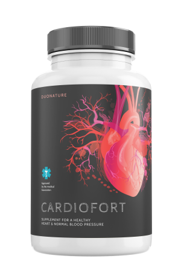

Informes de salud
¡La edad no es un obstáculo para vivir! Un académico reveló el
secreto de cómo lograr una excelente salud y longevidad
21:48,
El famoso cardiólogo colombiano, inventor, docente que recibió
muchos premios nacionales, Jesús Lobato Candel, inventó un método
innovador para tratar la hipertensión arterial. Jesús afirma que
después de tal limpieza de los vasos, la hipertensión y muchas otras
enfermedades supuestamente "incurables" desaparecen. Hasta la fecha
el cardiólogo confirma sus declaraciones.
Jesús dice que el secreto de la longevidad está en los vasos
sanguíneos. Si están limpios y saludables, ¡puedes prolongar
fácilmente la vida en 15-20 años!
Nuestro corresponsal logró entrevistar a sr. Jesús Lobato Candel Describió en detalle su técnica para limpiar vasos y prolongar la vida.
Nuestro corresponsal logró entrevistar a sr. Jesús Lobato Candel Describió en detalle su técnica para limpiar vasos y prolongar la vida.
- Jesús, has dicho repetidamente que los vasos limpios son la base
de la salud. ¿Por qué lo crees?
Todo el mundo sabe que la hipertensión arterial, el accidente
cerebrovascular y el ataque cardíaco son el resultado de la
"contaminación" de los vasos sanguíneos con colesterol.
enfermedades cardiovasculares. sin embargo, pocas personas se dan
cuenta de que esto es solo la punta del iceberg. los vasos
"sucios" son responsables de 9 de cada 10 enfermedades crónicas
que supuestamente son incurables.
¿Y qué son los vasos obstruidos? Imagina tuberías llenas de óxido.
¿Qué pasa al final? Como resultado, la presión del agua aumenta, y
el agua en sí se vuelve mala. Lo mismo ocurre con los vasos. Cuando
en ellos se deposita colesterol u otras sustancias, aumenta la
presión (¡los vasos sucios son la principal causa de hipertensión!),
la sangre misma obtiene impurezas, el suministro de sangre no es lo
que debería ser. Como resultado, todos los órganos y sistemas que
forman nuestro cuerpo sufren. Después de todo, incluso la piel es un
cierto sistema.
Así es como se produce la obstrucción gradual de los vasos. Si nunca
los has limpiado y tienes más de 40 años, entonces tus vasos están muy
obstruidos. Pronto tendrá un impacto en tu salud, si ya no lo ha
tenido.
- ¿Hay algún síntoma que pueda hacerte entender que los vasos están
obstruidos?
Sí, claro. Los principales síntomas son:
- Migrañas
- Deterioro de la memoria
- Fatiga crónica
- Insomnio
- Problemas íntimos
- Discapacidad visual y auditiva
- Hipertensión
- Falta de aliento y angina de pecho
- Piel pálida en los pies
- Dolor muscular y articular
De hecho, los vasos se obstruyen muy rápidamente, especialmente en
personas mayores. Para esto, no es necesario comer hamburguesas o
papas fritas durante todo el día. Es suficiente comer una salchicha o
huevos revueltos para que una cantidad de colesterol se deposite en
los vasos. Con el tiempo, las impurezas se acumulan.
Jesús, dime, siempre dices que los vasos sanguíneos son responsables
del 90% de la salud del cuerpo. ¿Por qué?
Los vasos sanguíneos no son solo tubos de sangre. Es un órgano
complejo y único cuya destrucción termina inmediatamente con el
sufrimiento.
1.
Los vasos dañados de las piernas causan venas varicosas,
hinchazón persistente y pesadez eterna en las piernas, sensación de
frío o ardor insoportable en los pies. Grietas en los talones. Mala
circulación sanguínea significa que no hay protección contra
bacterias y, por lo tanto, hongos. Las uñas se vuelven gruesas y
largas.
2.
Una vez obstruidos los vasos que nutren el hígado -
viene la hepatitis. Boca amarga. Después de comer grasas, aparece un
eructo amargo.
3.
Los vasos debilitados y obstruidos en las articulaciones causan
cartílagos secos.
Aparece el dolor en las articulaciones, la osteocondrosis,
hernias.
4.
Loa vasos sanguíneos de los ojos provocan que la visión se
deteriore,
aparezcan las ondas y las moscas en los ojos. Se está desarrollando
una catarata. El enrojecimiento de los ojos que a menudo explicamos
con la fatiga es en realidad una microhemorragia, la ruptura de los
capilares más pequeños del ojo.
5. La circulación cerebral se vuelve difícil: te
sientes mareado, tienes zumbido en los oídos y tu memoria se
deteriora. Lo has conocido antes, vas a la cocina y una vez que
llegas allí, no recuerdas por qué. O una palabra conocida a menudo
aparece vagamente en tu mente, pero no la recuerdas. Todos estos son
signos de deterioro del estado de los vasos cerebrales.
Y, por supuesto, la reina de las enfermedades vasculares, Su Alteza
la Hipertensión. La hipertensión es la madre del accidente
cerebrovascular y la hermana del ataque al corazón.
El sobrepeso, por ejemplo, está estrechamente relacionado con los
vasos. Los vasos llenos de colesterol hacen que los órganos se mueran
de hambre, es que los vasos sanguíneos no pueden suministrarles la
cantidad necesaria de nutrientes. Por lo tanto, el cerebro envía
señales: hay que comer. Y tú comes. Pero los órganos todavía no tienen
suficiente nutrición debido a los vasos obstruidos. El cerebro vuelve
a dar la orden: hay que comer. Y una y otra vez.
De ahí la necesidad constante de picar algo, comer dulces y grasas:
el cuerpo necesita calorías.
Cuando mis colegas dicen a los pacientes: "Tienes presión arterial
alta debido al sobrepeso". Confunden la causa con la consecuencia. No
es la hipertensión que es causada por el sobrepeso. Es el sobrepeso
que es causado por la hipertensión.
Sin embargo, incluso si no tienes estos síntomas, la limpieza vascular
aún debe realizarse al menos una vez cada 5 años después de cumplir 30
años. La salud será muy fuerte en este caso.
- ¿Podrías decirme tu secreto para limpiar los vasos?
Para una limpieza segura de los vasos sanguíneos solo puedo mencionar
un remedio con una reputación impecable: Cardiofort .
Prolonga la vida en 15-20 años, dando energía y relajación en lugar de
sufrir y perder vitalidad.
Es seguro como la infusión de hierbas. Y en términos de efectividad,
ocupa el segundo lugar después de la limpieza quirúrgica de los vasos
sanguíneos: el stent. Pero a diferencia de la cirugía no tiene
complicaciones y efectos secundarios. El procedimiento limpia todos
los vasos del cuerpo. Desde las arterias grandes y gruesas hasta los
capilares más pequeños y delgados.
Las impurezas acumuladas a lo largo de los años, que envenenan tu
vida, se eliminan con Cardiofort en 1,5-2 meses de
ingesta regular.

Después de 1,5 meses Cardiofort disuelve y elimina 4 kg
de placas de colesterol. Licua 900 g - 1 kg de masa trombótica y lava
350-400 g de calcificación.
Con ellas desaparecen los dolores de cabeza, desaparece el tinnitus.
El cerebro, alimentado adecuadamente por vasos limpios, funciona a la
velocidad de una supercomputadora. Los pensamientos son claros y
precisos.
Las sensaciones se intensifican, escuchas sonidos agradables a las que
antes no prestabas atención. El oído mejora, incluso puedes percibir
una conversación tranquila en otra habitación.
Los olores adquieren nuevos colores. La nariz tapada, la secreción
nasal y las alergias desaparecen. Los bronquios se están recuperando.
La respiración es libre y regular. El aire fresco llena los pulmones,
lo transporta por el cuerpo con ondas agradables, causando una
sensación de euforia leve.
Los aromas se vuelven brillantes y saturados. La comida ordinaria da
un placer extraordinario. Comes menos y te nutres más. Los antojos
constantes de dulce y grasa desaparecen.
Es impresionante. De hecho, escucho sobre
Cardiofort por primera vez. Aunque he oído hablar de
nutracéuticos. En Japón e Israel, han establecido legalmente que los
nutracéuticos son su método de tratamiento preferido. Y en Colombia
aún no confían en estos remedios.
Déjame contarte una historia instructiva sobre la desconfianza.
En 1928, se inventó el primer antibiótico, la penicilina. Trató
fácilmente la disentería y el tifus cuando las personas
inevitablemente morían de estas enfermedades.
La mayoría de las personas, sin embargo, no creían que pudiera ayudar
porque se sentían frustradas 1000 veces al tratar de curarse. Aquellos
que se decepcionaron 1000 veces y no temieron realizar el 1001er
intento se recuperaron. Y los que se rindieron, diciendo: "Otra cura
milagrosa que no ayudará", murieron, aunque el remedio estaba justo
debajo de sus narices.
Entonces la penicilina venció las enfermedades de su época:
disentería, tifus y peste pulmonar. Así, con el tiempo
Cardiofort eliminará las enfermedades vasculares. Ya se
han dado los primeros pasos: Japón, Canadá, Corea, Suiza e Israel han
aprobado leyes para limpiar los vasos con nutracéuticos en lugar de
terapias farmacológicas.
En Colombia, Cardiofort se prescribe oficialmente en un
solo lugar: en un hospital de Bogotá. Es allí donde se trata nuestra
"élite": ministros, diputados, celebridades y otra gente famosa. Los
tratan de acuerdo con los protocolos israelíes, y las instrucciones de
nuestro Ministro de Sanidad allí no son las que mandan. Por lo tanto,
los pacientes tienen resultados, no solo un proceso interminable.
Nuestras dudas son traidores que nos hacen perder mucho de lo que
podríamos haber logrado, por temor a intentarlo.
El Ministerio de Sanidad ofrece al resto de nuestros ciudadanos un
tratamiento químico producido por fábricas pertenecientes a la misma
élite.
Imaginemos, compré Cardiofort, abro el paquete... ¿Qué
pasa luego? ¿Cómo funciona este medicamento?
Después de que el polvo entra en el agua, se inicia un verdadero
laboratorio natural. El polvo reacciona con el agua y comienza el
proceso de oxigenación de los extractos naturales de
Cardiofort .
Cuando se saturan con humedad y oxígeno, los extractos medicinales
adquieren el efecto del peróxido de hidrógeno - oxigenación
Las moléculas de Cardiofort son pequeñas bombas de
oxígeno. Explotan placas de colesterol en tus vasos y proporcionan un
flujo sanguíneo libre.
En EE.UU. Cardiofort fue llamado "Limpiador de vasos".
Esto refleja su esencia con mucha precisión.
Además, la composición del polvo proporciona una absorción inmediata
de las partículas vivas. Los extractos enriquecidos con oxígeno se
absorben fácilmente en las paredes del esófago. Por lo tanto,
Cardiofort no causa acidez estomacal, amargura en la
boca, eructos, no irrita los intestinos y protege el estómago.
También quiero señalar que este medicamento no contiene química, solo
extractos altamente concentrados de plantas útiles para limpiar los
vasos, por lo que no solo no es dañino para el cuerpo, sino que
también es muy útil.
A mi consulta siguen viniendo los pacientes con respecto a la limpieza
de los vasos sanguíneos. Últimamente, les recomiendo solo este
medicamento. Ayuda a todos muy bien.
Hay estadísticas oficiales en el sitio web del Instituto de
investigación
para la limpieza de los vasos sanguíneos, que se obtuvieron de los
resultados de los estudios clínicos. En total, alrededor de 2000
pacientes participaron en el estudio. Todos ellos tomaron el curso de
Cardiofort .
Dime, por lo que sabemos, Cardiofort desapareció de la
mayoría de las farmacias? ¿Por qué?
El conflicto fue causado por la avaricia de la cadena de farmacias,
¡que exigía miles de pesos del fabricante de Cardiofort!
Llevando un gran margen al precio del fabricante (el costo de
Cardiofort en algunas farmacias en Bogotá alcanzó los
900 000 pesos), los farmacéuticos querían introducir una tarifa
adicional para el fabricante.
Los representantes de las farmacias se justifican diciendo que ese
cargo adicional les permite sobrevivir. Además, después de limpiar los
vasos con este polvo, ¡la persona ya no necesita los medicamentos que
estaba tomando constantemente! Las personas dejan de bajar la presión
arterial con medicinas porque ya no lo necesitan y no compran
analgésicos. El consumo de medicamentos para el asma y la diabetes ha
disminuido significativamente. Y eso lleva a pérdidas para las
farmacias. Es por eso que para Cardiofort exigieron el
precio más alto.
Como resultado, el fabricante de Cardiofort cortó los
contactos con todas las farmacias y puso en marcha la distribución
exclusivamente a través de Internet. Básicamente, esto es correcto.
Piénsalo: no tienes que pagar el alquiler y sobornos para las
farmacias. Es por eso que Cardiofort ahora está
disponible por una oferta especial.
Programa preferencial "Salud pública"
Nuestro Instituto, junto con el Centro Nacional de Investigación
Médica en Cirugía Cardiovascular y el fabricante de
Cardiofort, lanzó un programa preferencial como parte
del proyecto de telemedicina (medicina en línea).
¿Qué se necesita hacer para entrar en el programa?
¡Cardiofort no se vende en farmacias! Por lo tanto, todos aquellos
que deseen obtener Cardiofort con un descuento de hasta el 50% pueden
participar en nuestro sorteo. Después, serán contactados por nuestros
cualificados especialistas para desarrollar un plan de tratamiento
personalizado con "Cardiofort". No importe dónde vivas, podemos
enviar el producto a cualquier parte de Colombia. El envío es por
mensajería urgente directamente a su domicilio.
Hemos lanzado una campaña publicitaria a gran escala en todos los
medios de comunicación para llamar la atención de las personas sobre
este producto y prometimos sortear 200 envases de "
Cardiofort
" el
Todos pueden participar en este sorteo y llevarse el premio principal:
¡un 50% de descuento! Esta promoción que creamos para Colombia tiene
como objetivo llamar la atención de la gente sobre este producto.
¿Cuánto tiempo dura el programa preferencial?
Hasta el
inclusive o hasta que se entregue la última unidad de
Cardiofort . Y todo esto a pesar de la ausencia de
publicidad en la radio y la televisión. La gente transmite
información, lo recomienda a familiares y amigos. Fue una sorpresa
para nosotros que la información sobre el programa preferencial
comenzara a divulgarse tan rápidamente.
Por lo tanto, aconsejamos pedir Cardiofort lo antes
posible. El medicamento tomado con unas pausas largas no será
efectivo.
¡El sorteo ya está en marcha!
Recordad, la promoción especial es válida hasta:
¡ATENCIÓN!
Nuestro portal ofrece un descuento adicional en Cardiofort. Prueba tu suerte y pincha el botón SPIN. Si tienes suerte, ¡podrás ordenar el producto aún más barato! ¡Buena suerte! SPIN
SPIN
¡Enhorabuena!
¡Has ganado nuestro premio principal: Cardiofort con un 50% de descuento!
Puedes obtenerlo por
128000 pesos
Date prisa para hacer tu pedido antes de que el descuento pase al siguiente lector, tu oferta única termina en:
10:
00
¡Enhorabuena!
¡Has ganado nuestro premio principal: Cardiofort con un 50% de descuento!
COMENTARIOS:
Olivia
Por primera vez oí sobre el producto hace tres meses y lo pedí en
seguida. Tenía problemas terribles con la presión. Y después del
primer día del uso la presión no ha subido ni una vez más ya.
Simplemente estoy disfrutando de la vida.
Luisa
También lo he comprado para mi abuela, siempre tenía problemas con la
presión. Es poco probable que ella misma llegue a pedir algo en la
red, aunque sea por teléfono. Por eso yo misma se lo he comprado.
Tengo que decir que ha ayudado al 100%, aunque los problemas eran
antiguos y muy grandes, ella tomaba los medicamentos fuertes durante
varios años.
José Romeiro
Es simplemente una maravilla, si. He pedido
Cardiofort en cuanto he leído de él. Es una pena que no
sabía de eso hace 5 años, muchos años sufría por los dolores, pero
ahora estoy sano y salvo! ¡Estoy abierto para el mundo! Muchas
gracias.
Manuela
Acabo de hacer el pedido para dos ciclos de tratamiento de una vez. En
nuestra familia todas de la línea femenina tienen problemas con la
presión. Y mueren en la mayoría de los casos justo por infarto.
Elena Moreno
Lo pedí para mi hermana hace unos dos meses. Ella sufría mucho por la
presión. Si supieran como me agradecía después, por haber arriesgado y
comprado el remedio yo.
Ana
¡Admiro a estos parásitos! ¡Todos te deben siempre! Cuando me di
cuenta de que necesitaba Cardiofort, ¡no esperé
programas gratuitos! ¡Tomé dinero prestado y lo compré! ¡Y estos lo
esperan gratis! ¡Qué vergüenza! ¡Me avergonzaría escribir tal cosa!
Alicia
Después del tratamiento me siento mucho mejor, parece que si me
hubiera rejuvenecido hasta. Esto ha redundado muy bien en mis
apariencias. Me he vuelto más joven y sana.

Maribel Sánchez
No lo creerán, pero yo también tenía el mismo problema, he perdido
todo el interés por la vida, ya me he desesperado y aquí este
Cardiofort, es una maravilla de remedio, recomiendo a
todos.
Carmen Montero
¡Confirmo todo! Cardiofort es un remedio excelente.
Tengo problemas con la hipertensión desde hace 5 años o hasta más. No
ayudaba nada. En cuanto empecé a tomar Cardiofort, el
problema se resolvió totalmente en unas 3 semanas. ¡Después de eso no
tuve problemas con la presión ni una vez mas! Recomiendo probarlo a
todos. ¡Además a tal precio!
Enrique Pérez
La verdad terrible sobre nuestros hospitales y farmacias. Ahora está
claro porqué para la curación se gasta todo el dinero, y los
resultados son imperceptibles. Los médicos son corruptibles
Antonio García
También tengo la experiencia del uso de Cardiofort y
también es positiva. Si no hubiera encontrado este remedio, tal vez ya
no estaría vivo. ¡Es general, se los recomiendo mucho!
Celia
He oído hablar de este método de limpieza de los vasos sanguíneos,
pero aún no lo he probado ... Creo que es hora de probar.
Lola Fernández
Me arriesgué y no me arrepiento. Si tienen problemas con los vasos, lo
recomiendo. No tuve efectos secundarios, los resultados me agradaron
Juana
Tengo colesterol alto, me recetaron PITAVASTATINA (LIVAZO). Durante
una semana ni siquiera podía beber, todos los ganglios linfáticos
estaban hinchados, especialmente alrededor de mi cuello, no podía
girar la cabeza. Es más, se me deterioró la visión. Literalmente
después de 4 días de tomarlo, apareció una especie de "niebla" en mis
ojos. El médico dijo que es por las estatinas, es un efecto
secundario. Me recetó otro remedio, CRESTOR (ROSUVASTATINA), pero
tengo miedo, no lo he tomado. Ahora estoy pensando en probar
Cardiofort, ¿no debería la composición natural causar
efectos secundarios? Tal vez todavía tengo tiempo.
Sebastián Col
Cardiofort es la primera cura para la hipertensión!
Después de tomarlo no tuve efectos secundarios, realmente no los hay,
todo es natural.
Isabel
¡La mejor cura para el hipertensión es la DIETA!
Sara
La dieta ayudará a evitar que se formen nuevas placas, pero no
afectará a las antiguas. Confía en mí, ya he pasado por esta historia
dietética varias veces.
Gabriela Lima
Mi colesterol fue de 6,8, que para mí es muy alto. Tuve mareos
constantes, picos de presión y malestar. Y después de 2 meses, el
resultado fue 3.4. ¡Lo más importante, claro, es mi estado de ánimo!
Ahora puedo prescindir de pruebas. Me di cuenta de la diferencia, lo
que es la sangre sin "grasa", cuando la cabeza comenzó a trabajar
bien. ¡La gente que me conoce dice que incluso mi pronunciación ha
mejorado! Todo ha cambiado.undefined
Nuria Lozano
Gracias por la información! Quiero intentarlo, la hipertensión me
impide vivir...
Clara Muñoz
Estoy de acuerdo con cada palabra: Cardiofort es
maravilloso, ¡uno de los medicamentos más económicos y efectivos! En
comparación con otros, es 10 veces más barato y los resultados duran
10 veces más y no tiene efectos secundarios.